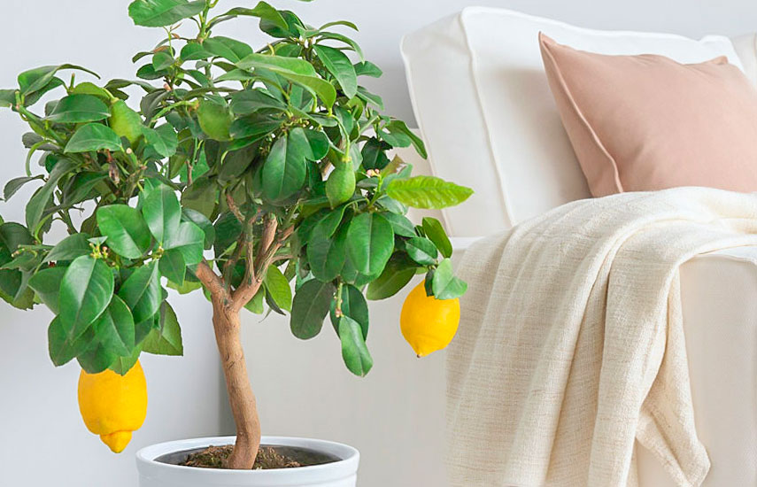
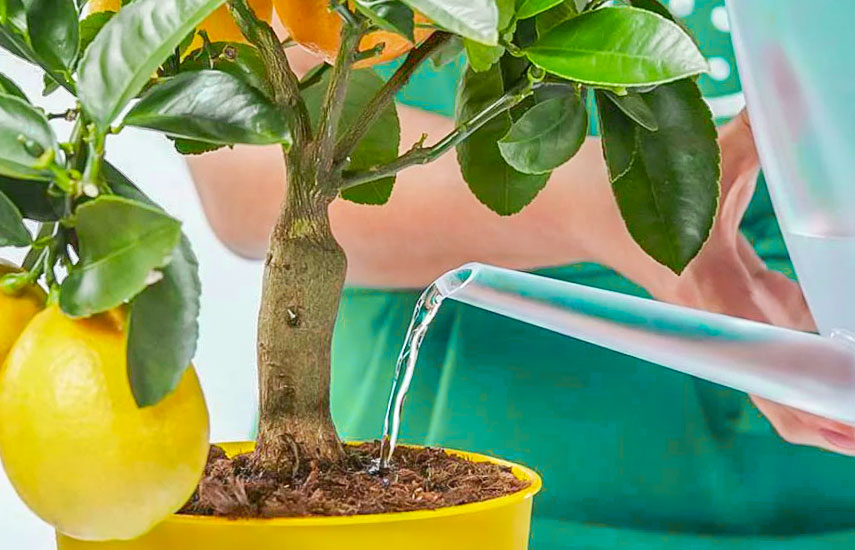
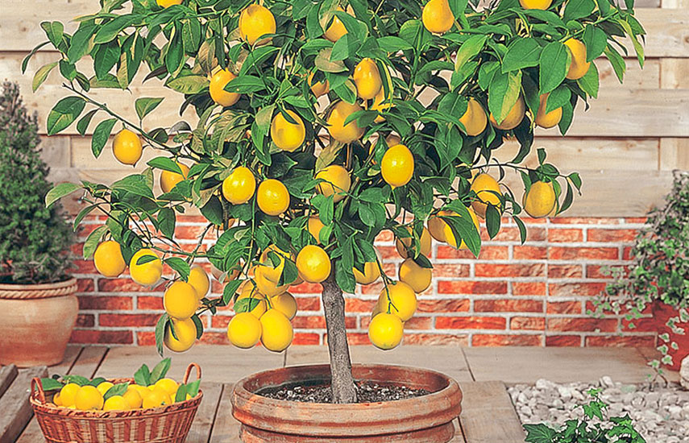

| Главная | Как вырастить лимон | Как вырастить киви | Как вырастить хурму | Как вырастить авокадо | Как вырастить манго |
Лимон - это не только красивый декор для дома, но и запас витаминов на всю зиму. Именно благодаря наличию таких витаминов как А, С и В, лимон активно используют для приготовления ряда блюд и напитков.
Лимон также славится тем, что его используют в целях профилактики цинги.
Лимонный сок прекрасно подходит для изготовления лимонной кислоты, а кожура - для приготовления лимонного масла.

Для того чтобы повысить шансы прорастания зерен, выбирайте их только из крупных и здоровых плодов. Рекомендуют брать зернышки сразу с нескольких лимонов.
Косточки не нужно сушить или замачивать, а сразу сажайте их в горшки с обычным или цветочным грунтом (можно добавить торф в пропорции 1: 1) на глубину 1 см. Семена располагайте на расстоянии 5 см.
До того как сойдут первой ростки (примерно 14 дней) регулярно поливайте саженцы и следите за температурой, которая должна составлять 18-22 ° С. Для этого следует поставить сеянцы на светлое место без прямых солнечных лучей и накрыть стеклом или пленкой до появления первых всходов. Обязательно ежедневно проветривайте сеянцы.
Наибольшие саженцы рассаживают в отдельные горшки диаметром до 10 см. В такие горшки следует положить дренаж, после чего можно добавить цветочный грунт с перегноем.

Лимон - не прихотливое растение, но существует 10 золотых правил по уходу за лимонным деревом, о которых следует помнить:
Для посадки лимонного дерева выбирайте небольшие глиняные горшки, на дне которых разместите дренажный слой из древесного угля или керамзита;
Поскольку лимон - светолюбивое растение, разместите его таким образом, чтобы он находился под солнечными лучами не менее 2 часов каждый день;
Проводите полив лимона дважды в неделю, а опрыскивание в горячий сезон - несколько раз в течение недели. Если вы заметили, что почва в горшке начала подгнивать - сразу замените ее;
Лимон должен иметь одно постоянное место (наилучшее у южного окна), поскольку он очень плохо переносит постоянные перемещения;
Лимон дает ежегодный прирост, поэтому каждый год рекомендуется проводить пересадку дерева в горшки, больше предыдущего на 1-2 см. Когда объем сосуда достигнет 8-10 литров, можно перейти на подкормки;
Используйте жидкие удобрения с февраля по сентябрь четко по инструкции;
Позаботьтесь о температуре от 18 до 27 ° С. Следите, чтобы лимон не страдал от сквозняков в зимний период;
Если проводить регулярную обрезку, то можно самостоятельно сформировать крону дерева. В таком случае процесс начинают на второй год, когда высота саженца достигла более 30 см, обрезая на 10 см. Если лимон снова выпустит побег вверх, то его нужно обрезать повторно, пока не сформируются боковые побеги;
Чтобы получить урожай с лимона из косточки, во время его цветения возьмите ватную палочку и перенесите пыльцу с пыльника на липкие тычинки;
Чтобы дерево не погибло от истощения во время плодоношения, следите чтобы на один плод приходилось 10-15 листьев. В противном случае удаляйте лишние плоды.
